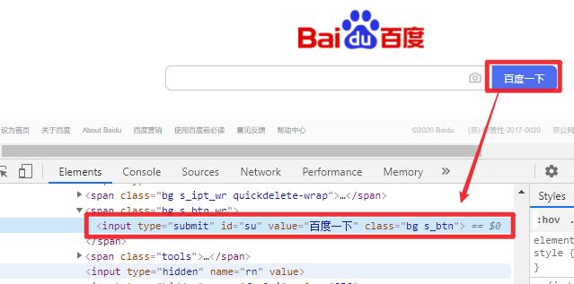
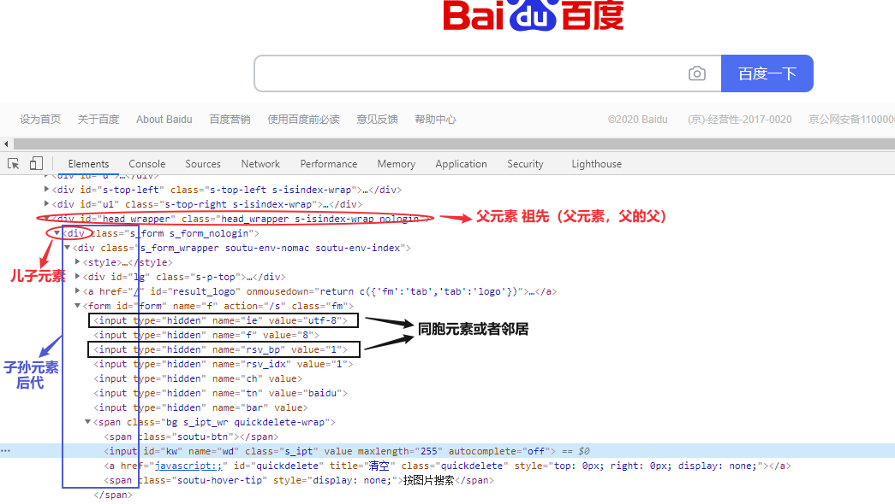
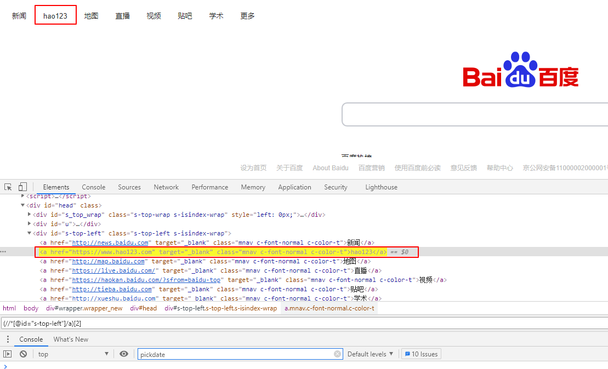
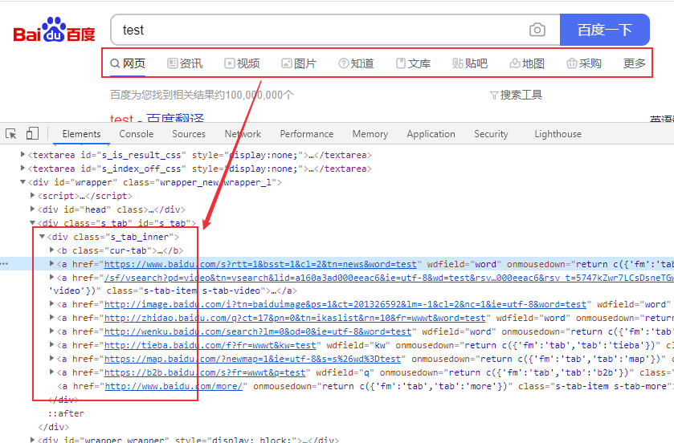
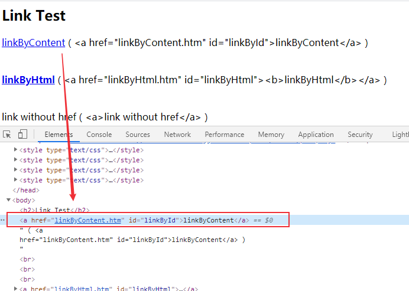

Xpath 和 CSS Selector简介
CSS Selector
CSS Selector和Xpath都可以用来表示XML文档中的位置。CSS (Cascading Style Sheets)是一种样式表语言，是所有浏览器内置的，用于描述以HTML或XML编写的文档的外观和样式。CSS Selector用于选择样式化的元素，所以理论上前端人员可以定位 DOM 节点并设置样式，那么对于测试人员这些元素也可以定位到。
XPath
XPath是XML路径语言，是一种查询语言，使用路径表达式浏览XML文档中的元素和属性。XPath标准语法如下：
Xpath=//tagname[@attribute=’value’]
- \// : 选择当前节点
- Tagname: 节点标签名
- @: 选择属性
- Attribute: 节点属性名
- Value: 属性值
XPath有绝对定位和相对定位两种，绝对定位使用绝对路径，缺点是路径太长，只要一个节点变动就无法定位。以单斜杠（/）开始，表示从根节点开始选择元素。下面是页面https://www.baidu.com/上“百度一下”按钮的绝对路径：
1 | /html/body/div[1]/div[1]/div[5]/div[1]/div/form/span[2]/input |

相对路径以双斜杠（//）开始，可以从HTML文档的任何位置开始，“百度一下”按钮的相对路径可以表示如下
1 | //input[@id="su"] |
Xpath VS. CSS Selector
CSS Selector和Xpath几乎可以定位到所有Web元素（HTML和XML文档元素，Android应用的层级结构使用xml编写），它们的主要差异包括：
- XPath通过遍历的方式从XML文档中选择节点，CSS Selector是一种匹配模式定位，因此CSS Selector比 XPath 执行效率更高。
- Xpath可以通过文本来定位，而CSS Selector不能；
- Xpath可以通过子节点来定位父节点，CSS Selector是前向的，不能利用子节点定位父节点。
- CSS Selector语法相比Xpath更加简洁
Xpath 和 CSS Selector元素定位
接下来对比一下这两种方法的语法差异，节点的定义我们规定如下：

儿子元素定位
xpath使用‘/’，CSS Selector使用‘>’
| Xpath | CSS Selector | |
|---|---|---|
| 语法 | //element/element | element>element |
| 示例 | //div/a | div > a |
| 描述 | 选择父元素为 \ 元素的所有 \ 元素。 |
还可以使用XPath Axes（轴）child 来定位子元素
XPATH:
1 | //div/child::* # 选择父元素为 <div> 元素的所有儿子元素 |
CSS Selector:
1 | div > a:nth-child(2) # 选择父元素为 <div> 元素的第二个<a>元素 |
子孙元素定位
xpath使用‘//’，CSS Selector使用空格
| Xpath | CSS Selector | |
|---|---|---|
| 语法 | //element//element | element element |
| 示例 | //div//a | div a |
| 描述 | 选择 \ 元素内部的所有 \ 元素。 |
还可以使用XPath Axes（轴）descendant 来定位子孙元素
XPATH:
1 | //div/descendant::* # 选择祖先元素为 <div> 元素的所有子孙元素 |
CSS Selector使用空格定位子孙元素后进行选择:
1 | div a:nth-child(2) # 选择祖先元素为 <div> 元素的第二个<a>元素 |
邻居节点定位
在同一个父节点下，定位下一个相邻节点
| Xpath | CSS Selector | |
|---|---|---|
| 语法 | //element/following-sibling::element | element + element |
| 示例 | //div/following-sibling::a | div + a |
| 描述 | 选择紧接在 \ 元素之后的所有 \ 元素。 |
Xpath可以定位当前节点前面的邻居节点，CSS Selector不能
1 | //*element/preceding-sibling::element |
父元素、祖先元素定位
CSS Selector是前向的，不能利用子节点定位父节点
| 方法 | 描述 |
|---|---|
| .. | 一个点”.“表示选取当前节点，两个点”..“表示选取当前节点的父节点。 |
| ancestor | 当前节点祖先元素（父、祖父…） |
| parent | 当前节点的父节点 |
Id定位
| Xpath | CSS Selector | |
|---|---|---|
| 语法 | //*[@id=’example’] | #example |
| 示例 | //*[@id=’uesrname’] | #uesrname |
| 描述 | 选择id=’uesrname’的元素。 |
Class定位
| Xpath | CSS Selector | |
|---|---|---|
| 语法 | //*[@class=’example’] | .example |
| 示例 | //*[@class=’uesrname’] | .uesrname |
| 描述 | 选择class=’uesrname’的元素。 |
属性值定位
没有Id和Class的情况下，可以使用其它属性值定位，比如name、type等。
| Xpath | CSS Selector | |
|---|---|---|
| 语法 | //*[@attribute=’value’] | [attribute=value] |
| 示例 | //*[@name=’uesrname’] | [name=’username’] |
| 描述 | 选择属性值name=’uesrname’的元素。 |
xpath可以使用 ‘and’ 或者 ‘or’ 连接两个属性：
XPATH：
1 | //input[@name='login'and @type='submit'] |
CSS Selector：
1 | input[name='login'][type='submit'] |
CSS Selector可以进行子字符串匹配进行定位:
^= 匹配前缀
1 | [id^='id_prefix_'] # id前缀为‘id_prefix_’的元素 |
$= 匹配后缀
1 | [id$='_id_sufix'] # id后缀为‘_id_sufix’的元素 |
*= 包含某个字符串
1 | [id*='id_pattern'] # id包含‘id_pattern’的元素 |
Xpath Contains()方法
Contains()方法允许通过部分文本来定位查找元素，CSS Selector不支持这种用法。
1 | Xpath = //*[contains(@type,'partial_text')] |
Xpath Starts-with()方法
查找属性值以特定文本开始的元素
1 | Xpath = //*[starts-with(@type,'start_text')] |
Xpath Text()方法
Text()方法基于web元素文本来进行定位
1 | Xpath = //*[text()='text_value'] |
实例
定位第n个元素
如果某个XPath表达式可以定位到多个元素标签，可以通过(xpath表达式)[index] 定位第index个元素，index索引从1开始。
1
2
3# 点击百度页面 hao123
self.driver.get("https://www.baidu.com/")
self.driver.find_element_by_xpath('(//*[@id="s-top-left"]/a)[2]').click()
子孙元素定位
百度一下”text“，点击”资讯“

Xpath：
1 | //*[@id="s_tab"]/descendant::a[1] |
CSS selector：
1 | #s_tab a:nth-child(2) |
python测试代码：
1 | def test_css(self): |
邻居节点定位
点击”资讯“下一个邻居节点”视频“
xpath
1 | //*[@id="s_tab"]/descendant::a[1]/following-sibling::a[1] |
CSS selector：
1 | #s_tab a:nth-child(2) + a |
python测试代码：1
2
3
4
5
6
7
8def test_css2(self):
self.driver.get("https://www.baidu.com/")
self.driver.find_element_by_id("kw").send_keys("test")
self.driver.find_element_by_id("su").click()
# element = self.driver.find_element_by_css_selector('#s_tab a:nth-child(2) + a')
element = self.driver.find_element_by_xpath('//*@id="s_tab"]/descendant::a[1]/following-sibling::a[1]')
element.click()
sleep(2)
Xpath Contains()、Starts-with()、Text()定位
测试页面：http://sahitest.com/demo/linkTest.htm
点击”linkByContent“

xpath语法：
1 | //*[contains(@href,"Content")] |
python测试代码：
1 | def test_css2(self): |
总结
Xpath几乎可以定位到所有Web元素，CSS Selector效率更高，且代码简洁，但有些元素可能无法定位，特别是需要通过子元素来定位的父元素，或者需要通过文本定位的元素。
在实际使用中，按照自己的实际情况来选择即可，CSS Selector理论上执行效率更高，但他们的性能差异不是很大，在几毫秒或者几十毫秒级别。这两种定位方法除了本文介绍的以外，还有更多其它高级语法，可以参考官方文档。
本文标题:Web自动化测试 | xpath & CSS Selector定位
文章作者:hiyo
文章链接:https://hiyongz.github.io/posts/selenium-xpath-and-CSS-Selector-locator/
许可协议:本博客文章除特别声明外，均采用CC BY-NC-ND 4.0 许可协议。转载请保留原文链接及作者。